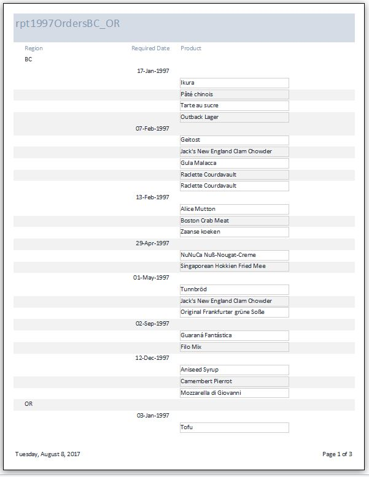

Note: Make sure to follow the instructions on this page. This assignment is published to your website per Project1 instructions.
Answer the following questions using a copy of the Northwind.mdb database file located on the class network drive at: \\store\classes\ YearTerm & Save the Northwind.mdb file in your ' ' folder.
Use your knowledge of Access to create a form / subform based on the Order Details and Orders tables. When done, save the form as frmOrders.
(50) 1. Which table is the data source for the subform?
(50) 2. Which table is the data source for the form?
(100) 3. In Form View, print the first three (3) pages as a .pdf file. Save the form as "Ex1" in your ' ' folder. You will be combining pdf files from several exercises at the end of this assignment, just as you did in Formative00-PDF File Creation.
Use the Northwind.mdb file and your knowledge of Access to create a report with the following features:
Your report must output only the following fields
Hint: first create a query, which will return 54 records using the above criteria. Be very careful in applying the criteria, especially with respect to 'AND' and 'OR'
If the number of records returned does not equal 54, then review your criteria very carefully.
(50) 4. List the three tables needed for the query or solution.
Create a report based on the query to properly display the results.
Hint: feel free to experiment and use the Report Wizard. One possible report looks like this: 
(100) 5. In Report View, print all pages as a .pdf file. Save the form as "Ex2" in your ' ' folder. You will be combining pdf files from several exercises at the end of this assignment, just as you did in Formative00-PDF File Creation.
Use a web browser to verify that you have published your website to https://classes.winona.edu/... Check that your name, StarID, email, class, semester, section and all of your answers are correct and visible. From the menu choose File>Print... and using "Microsoft Print to PDF" save a copy of this assignment as a .pdf file in your ' ' folder.
(50) 6. Save your file 'WebPage.pdf' in your ' ' folder.
Use PDFill to merge the WebPage.pdf file with the Ex1 and Ex2 pdf files, and save it as 'Formative04.pdf' in your ' ' folder.
(50) 7. Upload your file 'Formative04.pdf' to the D2L 'Formative04' Assignment folder.
Use a browser to view your completed and published website at: https://classes.winona.edu/... Ensure that you have linked this assignment on your home page. Note that your screen shots do not have to be completed to perform this step.